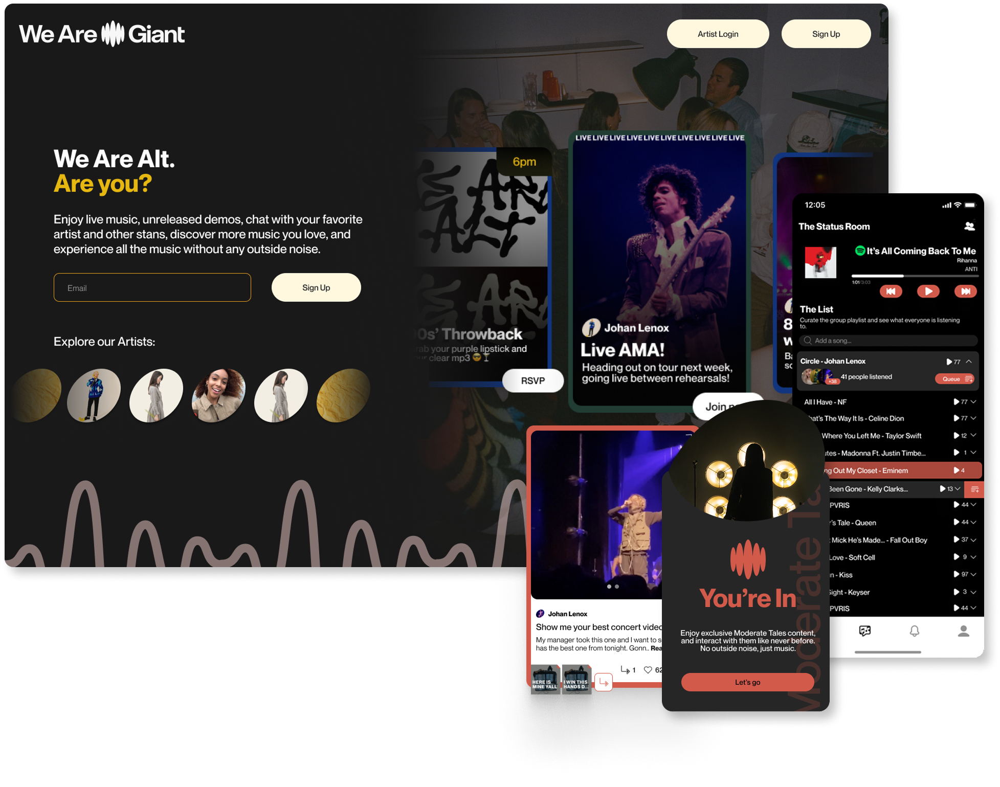
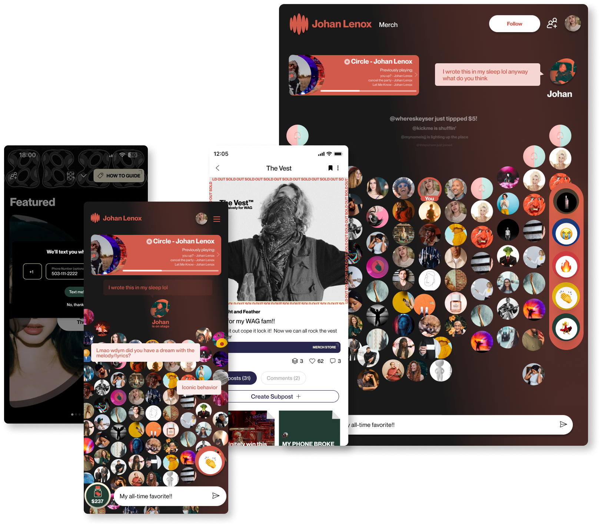
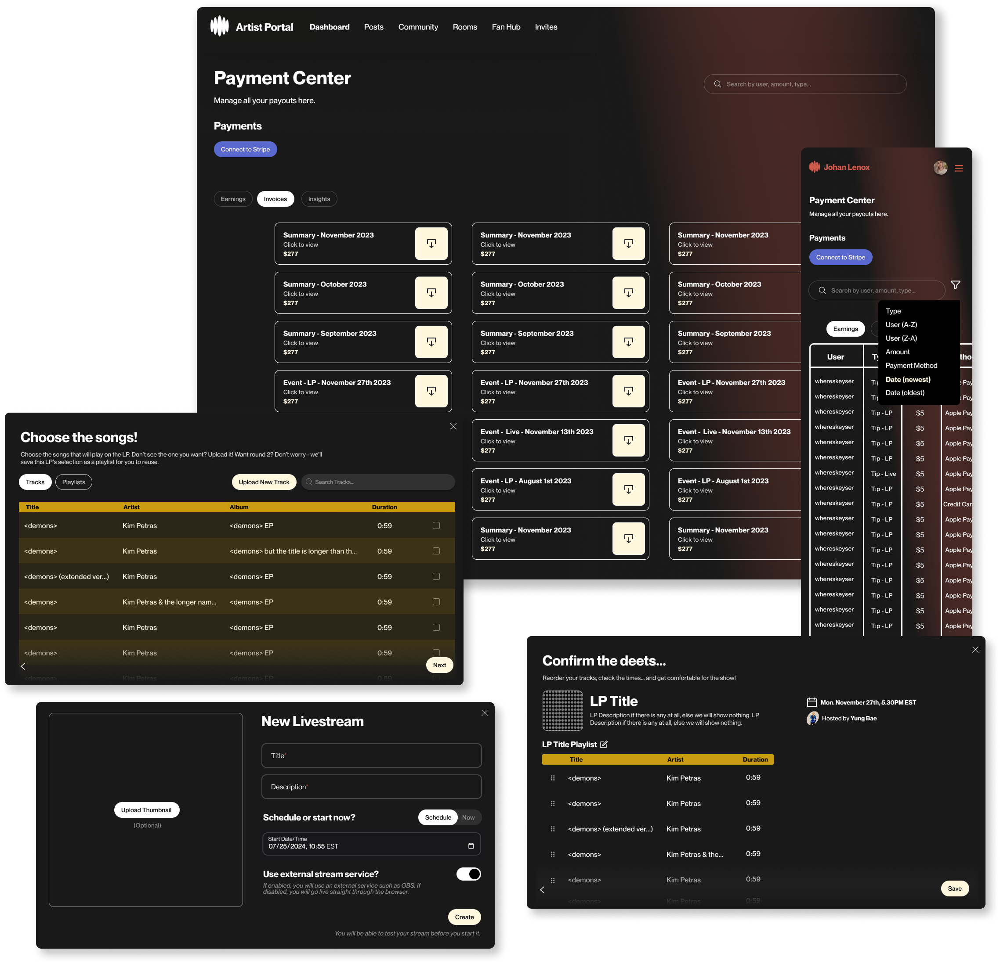

As a Sr. Product Designer at Mellomanic (frmr. We Are Giant), I became the 1st designer in the company, taking it from prototype to full-scale launch with A-list artists and over 100k MAU.
Over 3 years, I developed a cross-platform space for musicians and fans to connect virtually the way they did in the early 00s (think Blogs, LiveJournal, MySpace, YouNow) with the benefits of today's technology.

We created unique experiences not seen in other apps, such as Listening Parties — virtual concerts where musicians could show unreleased demos, ideas, new singles, even their favorite songs!

It was an exciting challenge to balance what a superfan would want, as well as what is low-lift and efficient for musicians and their teams — for every fan-facing feature, its Artist Portal counterpart would be carefully thought out and crafted for artist teams to use.

Let's work together!
I’m currently interested in on-site positions in the US (preferably NY or NJ), Ireland, England, or remote positions, part or full time. You can contact me via email.
© Riedel Solutions, 2025